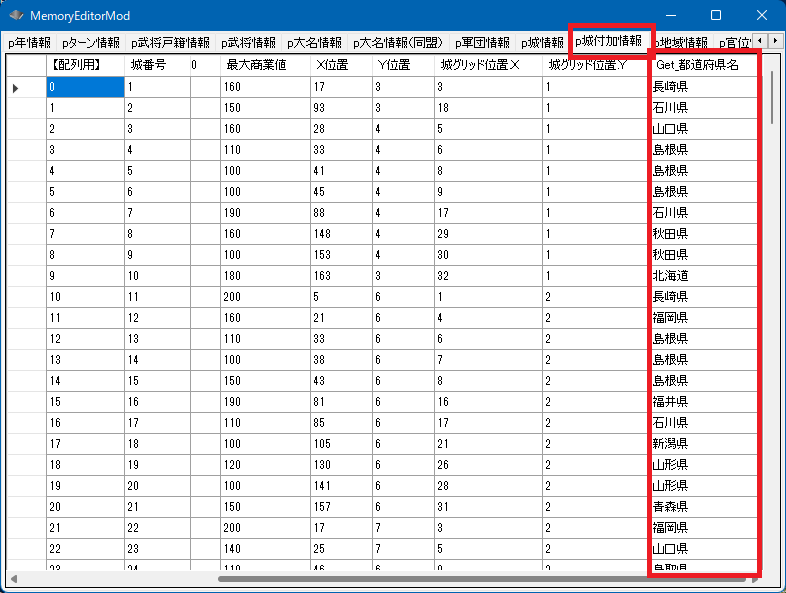

主な使用用途としては、「天翔記の城」を「現代マップと絡めて」利用する際に使用することとなるでしょう。

int Get_城都道府県番号(int 城番号【配列用】)
string Get_都道府県名(int 都道府県番号)
void カスタム::On_プレイヤ担当ターン《メイン画面》() {
int iCastleID = 城配列番号::二条城;
int 都道府県番号 = Get_城都道府県番号(iCastleID);
string 都道府県名 = Get_都道府県名(都道府県番号);
デバッグ出力 << "二条城は現代の都道府県の" << 都道府県名 << "にあります" << endl;
}
「城 － 都道府県」に関する主な所は以上となります。 詳しくは「地域情報型.h」や「地域情報列挙.h」などを参照してください。